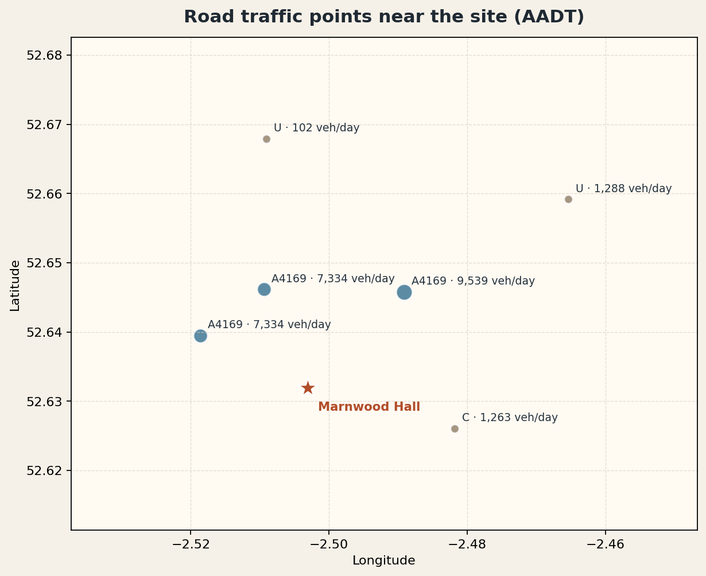
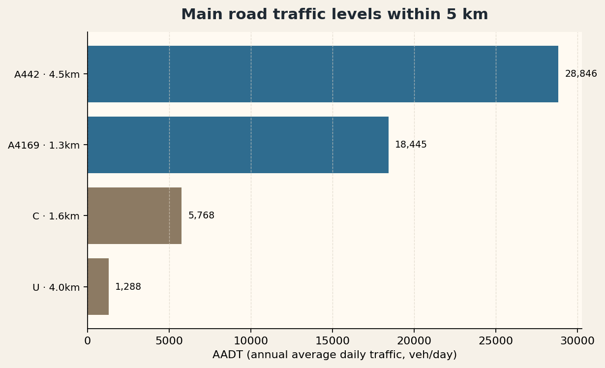
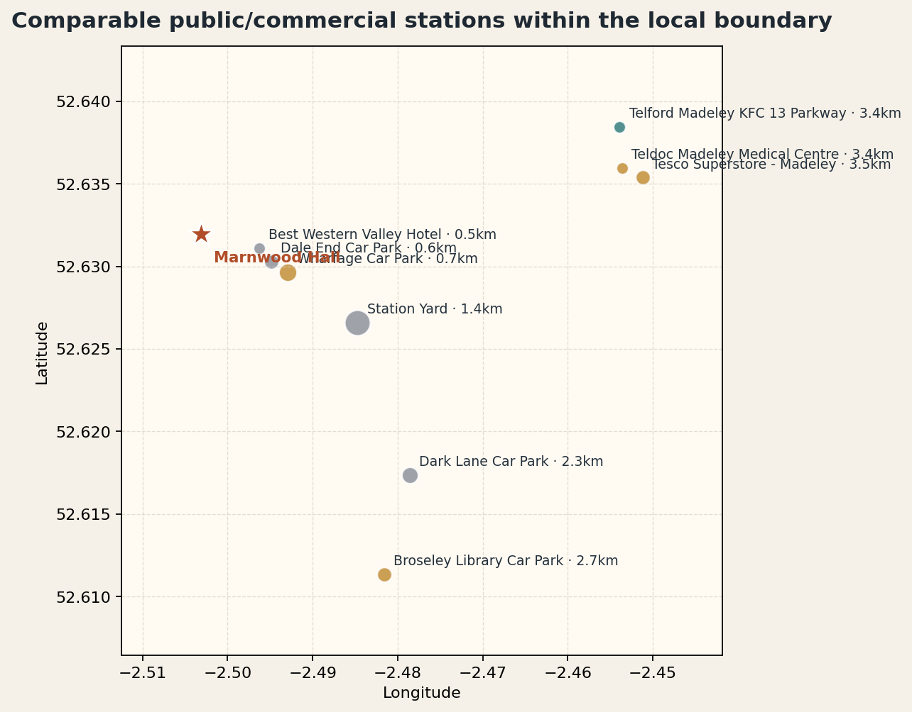
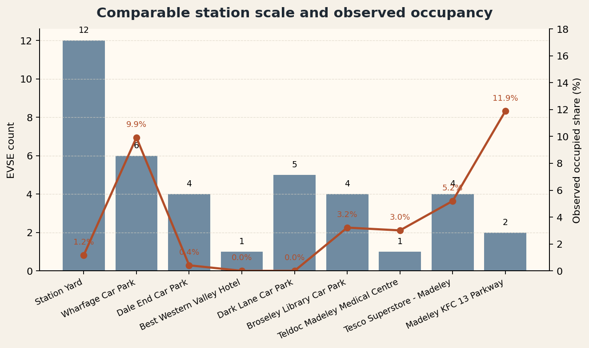
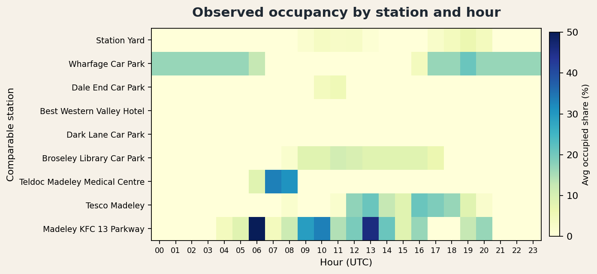
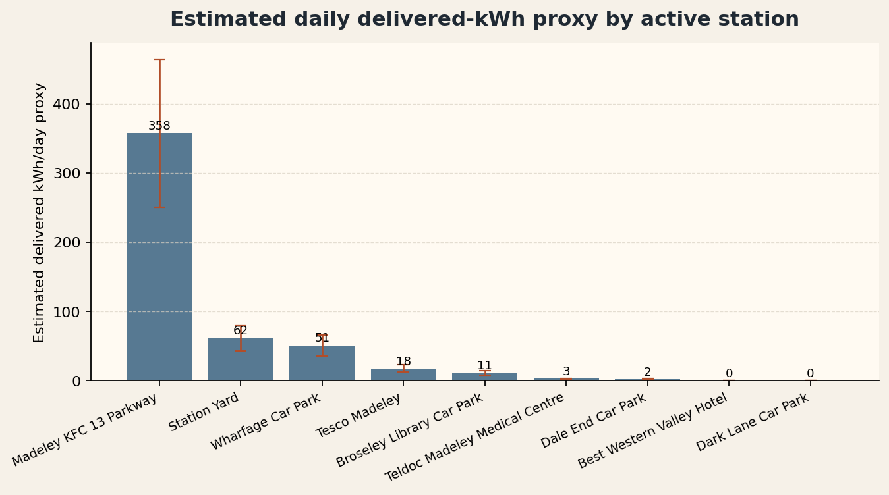

Stage-0 screening note
Ironbridge Project Snapshot / Initial View
Marnwood Hall / Buildwas Road is best read as a Stage-0 screening note used to decide whether this location is worth taking into the next round of development proof.
Recommendation: Conditional Proceed. At this stage the opportunity looks more like a destination / town-edge charging point with proof value, not a proven high-turnover hub.
Core evidence today: within the 5km comparable public/commercial pool of 9 sites, activity is led by Telford Madeley KFC 13 Parkway, Station Yard, Wharfage Car Park; real public charging is present in the area, but demand is concentrated in a small number of mature nodes.
This initial read is based on a monitoring window of about three days.
Across the full 5km comparable area, only about 3.9% of serviceable EVSE are charging at any point in time on average.
This is a proxy for the full 5km comparable area, not the forecast throughput of Marnwood Hall itself.
The area already shows real public charging activity, with use concentrated at mature nodes such as KFC rapid, Station Yard, and Wharfage. The current fit is stronger as a local frontage charging point to test further, not as an immediate investment case.
Stage-1 still needs to confirm likely capture at Marnwood Hall, whether the frontage layout works in practice, and whether grid / site authority are manageable. Peak simultaneous charging observed in the current window reached about 6 EVSE.
01 Site introduction
Project / Site Introduction
Marnwood Hall sits on the Buildwas Road frontage, so the project should first be read through site context and charging role, before traffic, competition, and observed use.
Site context
Marnwood Hall is located on Buildwas Road in Ironbridge, sitting at the frontage of the local Ironbridge / Broseley / Madeley movement catchment. The plot faces the main road and has good frontage visibility, making it more suitable as a local demand capture point than as a hidden destination-only site.
Charging-site role
The proposed charging scheme would sit on the front side of the site, directly alongside the Buildwas Road frontage. This is not a typical meal-stop use case; it is better framed as a frontage-led local charging point whose job is to capture existing public charging demand in the area and prove whether it can function as a local top-up node.
The site reads more like a town-edge / local-through-traffic / frontage-capture location than a back-of-site or enclosed-campus location.
The task now is to validate real local demand, the competitive set, and the site’s ability to absorb that demand, not to conclude on investment returns.
This project is not about copying one existing rapid site; it is about testing whether the location can absorb charging demand that is already visible around Ironbridge.
At this stage the most defensible framing is a town-edge / local-through-traffic / frontage-capture site, rather than a closed destination site or a mature meal-stop node.
02 Traffic
Traffic / Roadflow Base
Local road counts show that the frontage around Marnwood Hall does sit beside real and meaningful traffic flow. Here AADT means Annual Average Daily Traffic, measured in vehicles per day.
Nearby traffic count points

Main road traffic levels

The nearest main road to the site, with near-field counts of about 7.3k-9.5k vehicles per day.
The outer corridor trunk road, with peak counts of about 28.8k vehicles per day.
Overall traffic support looks moderate to moderately strong, which is enough to justify continued testing of a local frontage charging point.
03 Competition
Main Competitor Deployment
The key competition question is not just how many stations exist nearby, but which mature nodes are actually absorbing demand and what power / context they operate in.
2.5 km · 125.0 kW · 11.9% occupancy
0.0 km · 50.0 kW · 1.2% occupancy
0.6 km · 7.2 kW · 9.9% occupancy
Competitor map

Scale and occupancy

The current comparison boundary is a 5km pool of public/commercial comparable sites. At this stage the more useful question is how mature nodes such as KFC rapid, Station Yard, and Wharfage absorb demand, rather than treating every visible charger as the same class of competition.
04 Observed usage
Observed Charging Pattern
This is the key page. Over the last 75.5 hours, average area occupancy across the 5km comparable pool was about 3.9%, with a peak of 6 EVSE charging at the same time. Activity is led by Telford Madeley KFC 13 Parkway, Station Yard, Wharfage Car Park. This page is meant to show when charging happens and which mature nodes carry most of it.
Station-by-hour heatmap

Top active stations
125.0 kWPower
11.9%Avg occupancy
358kWh/day proxy
High-power rapid charging in a mature convenience setting lifts daily kWh materially.
50.0 kWPower
1.2%Avg occupancy
62kWh/day proxy
A local hub profile: volume comes more from consistency than from single-gun power.
7.2 kWPower
9.9%Avg occupancy
51kWh/day proxy
A car-park slow-charging profile: dwell time is longer, but power is too low for high daily kWh.
The heatmap shows when each comparable station is active across the 24-hour day. At this stage the evidence is strong enough to say that real public charging activity exists nearby, but it is concentrated in a limited number of mature nodes and time windows. The kWh/day proxy in the cards on the right is not a meter read; it is a screening conversion using 18.0h × 125kW × 50% ÷ 3.1 days ≈ 358 kWh/day. That is why two sites can both show use while a 125 kW rapid charger and a 7 kW slow charger still land at very different daily kWh levels.
05 Demand proxy
Expected Charging Volume
Here the observed charging hours are translated into a delivered-kWh range proxy. The current 5km area demand pool reads at about 353 - 655 kWh/day. The purpose of this page is to show the order of magnitude if a new site captures part of that area demand.
Daily kWh proxy by station

Capture scenarios
| Scenario | Capture | kWh/day | kWh/year |
|---|---|---|---|
| Low | 5% | 18 - 33 | 6437 - 11954 |
| Base | 10% | 35 - 66 | 12873 - 23908 |
| High | 15% | 53 - 98 | 19310 - 35862 |
This is a screening-level demand proxy, not a revenue forecast and not meter-grade delivered kWh. The 353-655 kWh/day range comes from aggregate charging hours × power across the 5km pool × 35%-65%, then ÷ 3.1 days = 353-655 kWh/day. The 35% / 50% / 65% factors are only Stage-0 low / mid / high conversion assumptions used to size the range, not claims about real delivered efficiency.
06 Risk and next step
Risk, Evidence Gaps, and Next Step
The most defensible wording today is not “worth investing”, but “worth validating further”. This page closes out the key Stage-0 unknowns into a clear risk and next-step gate.
| Risk | What we know now | Why it matters | Next-step proof |
|---|---|---|---|
| Capture risk | Observed activity is concentrated in KFC rapid and Tesco retail nodes, while Marnwood Hall has no direct usage proof yet. | A new site may not replicate the turnover seen at mature nodes. | Add site-visit read-through, host fit, and pricing / dwell-time assumptions. |
| Grid and layout | Current evidence only covers frontage and use-case fit; there is no formal grid quote or charger layout yet. | Connection cost, ingress / egress flow, and bay positioning could still change the case materially. | Start Stage-1 with a desktop grid check and a preliminary layout. |
| Window depth | The current window is about 3.1 days, which is suitable for screening but not for seasonal conclusions. | A short window may understate or overstate weekday / weekend structure. | Keep refreshing the monitoring window and add a weekday / weekend read in the next revision. |
The local comparable pool already shows real public charging activity in the area, with use concentrated in rapid KFC-type and retail Tesco-type nodes.
The capture potential of Marnwood Hall itself is still not proven by frontage, pricing, access, and dwell-time evidence.
Proceed into Stage-1, but only for light development proof: desktop grid check, site-visit replay, layout, parking / access review, and host readiness.
This material is for Stage-0 screening only and should not be used as an investment approval or revenue case.